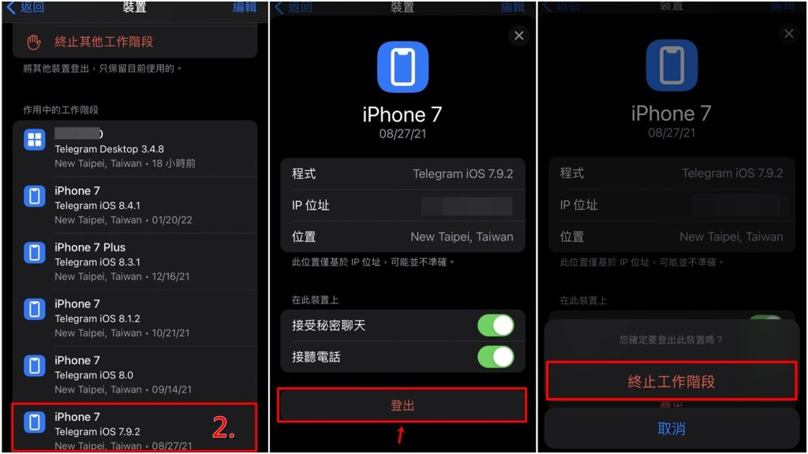

Telegram登出了怎么办？
如果你不慎登出了Telegram，只需重新打开应用并使用你的手机号码重新登录。输入接收到的验证码后，即可重新访问你的账户。如果遇到任何问题，如未收到验证码，请检查网络连接并稍后重试。

Telegram重新登录步骤
如何找回丢失的验证码
- 检查短信过滤或阻拦: 确认你的手机没有启用短信过滤或阻拦服务，这可能阻止了验证码的接收。检查垃圾短信文件夹或阻拦列表，确保Telegram的短信能够到达。
- 请求重新发送验证码: 如果在几分钟内没有收到验证码，可以在Telegram登录界面选择重新发送验证码。注意需要等待指定的倒计时结束后才能重新请求。
- 联系运营商确认短信服务状态: 如果重复发送依然无法接收验证码，可能是你的手机运营商存在问题。联系运营商确认是否有服务故障或短信接收限制。
重新登录时遇到的技术问题及解决方案
- 应用更新: 确保你的Telegram应用是最新版本。过时的应用可能有未修复的bug，这可能影响登录过程。访问应用商店检查更新，并安装任何可用的更新。
- 网络连接问题: 弱或不稳定的网络连接可能导致登录失败。尝试切换到不同的网络环境，比如从移动数据切换到Wi-Fi，看是否可以解决问题。
- 重装Telegram应用: 如果上述方法都不能解决问题，尝试卸载Telegram应用，然后重新安装。这可以清除可能导致登录问题的应用数据或配置错误。
常见的Telegram登录问题
手机号码无法接收验证码问题
- 检查手机号输入: 确保输入的手机号完整且正确，包括正确的国家代码。错误的手机号或遗漏国家代码都会导致无法接收验证码。
- 检查手机信号和拦截设置: 确认手机信号良好且没有启用短信拦截功能。有时候，手机安全软件或运营商设置可能会阻止来自未知号码的短信。
- 联系运营商: 如果上述措施仍旧无效，联系你的手机运营商检查是否有短信服务中断或短信过滤设置阻挡了验证码短信。
解决App崩溃导致无法登录的方法
- 更新应用程序: 确保Telegram应用已更新到最新版本。开发者经常更新应用以修复已知问题和提升性能。访问你的应用商店，检查并安装所有可用更新。
- 清除缓存和数据: 在手机的设置中，找到应用管理器，选择Telegram，然后清除缓存和数据。这可以解决由残留数据引起的崩溃问题，但可能需要重新登录。
- 重装Telegram应用: 如果清除缓存和数据后问题依旧，尝试卸载Telegram应用然后重新安装。这通常能解决更深层次的软件冲突问题。

Telegram账户安全保护指南
设置两步验证提高账户安全性
- 启用两步验证: 在Telegram的“设置”菜单中选择“隐私与安全”，找到“两步验证”选项并启动它。你需要设置一个额外的密码，这个密码在你每次登录新设备时都会被要求输入。
- 创建强密码: 为两步验证设置一个强密码，最好是包含数字、大写字母、小写字母和特殊字符的组合。避免使用生日、电话号码或常见的密码组合。
- 定期更换密码: 定期更新你的两步验证密码可以防止密码被破解。建议每几个月更换一次，以保持账户安全。
防止未授权登录的措施
- 检查活动会话: 定期查看账户的“活动会话”部分，这可以在Telegram的“隐私与安全”设置中找到。这里列出了所有登录过你账户的设备。如果发现任何可疑的活动，立即终止那些会话。
- 启用登录警告: 在Telegram设置中，你可以选择接收关于新登录的警告消息。每当有新设备登录你的账户时，Telegram都会通过消息通知你。
- 使用安全网络连接: 避免在公共Wi-Fi或不安全的网络环境下登录你的Telegram账户。使用VPN可以增加一个安全层，尤其是在外出时使用不受信任的网络。

优化Telegram使用体验
整理聊天历史以便快速恢复
- 使用聊天文件夹: 利用Telegram的聊天文件夹功能，将聊天按类型或重要性分组管理。例如，可以创建一个工作相关的文件夹和一个个人聊天的文件夹，这样有助于你快速找到需要的对话。
- 清理无用聊天: 定期清理不再活跃或不重要的聊天记录。你可以设置自动清理，让Telegram在特定时间后自动删除旧消息，以保持聊天界面的清洁和组织性。
- 备份重要聊天: 对于重要的聊天记录，可以使用Telegram的导出功能，将聊天记录保存到你的电脑或云存储中。这样即使在应用中删除了这些消息，你也能从备份中恢复它们。
自定义通知设置的重要性
- 调整通知音量和振动模式: 根据你的环境和个人偏好，调整每个聊天的通知音量和振动模式。例如，你可以为工作相关的消息设置更明显的通知音，而将社交聊天设为静音。
- 使用关键词通知: 在Telegram中设置特定关键词的通知。当这些关键词在聊天中出现时，无论通知设置如何，你都会收到提醒。这是确保你不会错过重要信息的好方法。
- 智能通知时间: 利用Telegram的智能通知功能，可以设置在特定时间段内减少或关闭通知，比如在晚上或是忙碌时段。这样可以帮助你集中注意力，同时减少干扰。

提高Telegram账户恢复效率
快速恢复Telegram联系人的技巧
- 同步联系人: 确保在Telegram设置中启用联系人同步功能。这样，当你更换设备或重新安装Telegram时，你的电话联系人会自动匹配到Telegram账户，从而快速恢复已有的Telegram联系人。
- 导出和导入联系人: 使用Telegram的导出功能将联系人列表保存为文件，存储在安全的地方。当需要恢复联系人时，可以通过导入功能快速将这些联系人恢复到你的账户中。
- 利用云备份: 确保开启Telegram的云备份功能，这样即使设备丢失或损坏，你的联系人信息仍然可以从云端恢复。这是一种安全且高效的恢复方法。
备份与恢复Telegram聊天记录的方法
- 使用Telegram内置备份: Telegram自动将所有聊天记录保存在云服务器上。只要你使用相同的手机号和验证信息登录，即可无缝访问之前的聊天记录，无需手动恢复。
- 导出聊天历史: 在电脑版Telegram中，你可以导出包括聊天历史在内的各种数据。通过设置部分中的“导出Telegram数据”选项，选择要导出的聊天类型和时间范围，从而创建一个聊天记录的本地备份。
- 定期备份: 为防止数据意外丢失，定期手动导出重要的聊天记录。将这些备份保存在不同的存储设备或云存储服务中，以确保在需要时可以轻松恢复。
Telegram登录时忘记了密码怎么办？
如果忘记了密码，可以使用“忘记密码”功能重置密码。在登录界面输入电话号码后，选择“忘记密码”，然后按照提示操作来重设密码。
如何防止Telegram意外登出？
确保Telegram应用保持更新，并避免在不安全的设备上登录账户。同时，可以设置较长的自动锁屏时间，避免频繁需要重新登录。
如果在外出时无法登录Telegram该如何解决？
检查设备的网络连接是否稳定，尝试切换到不同的网络（如从移动数据切换到Wi-Fi）。如果问题依旧，重启手机或重新安装Telegram应用可能有助于解决登录问题。
Telegram中文 其他新闻

用自己的手机号注册Telegram安全吗？
使用自己的手机号注册Telegram是安全的，但需要注意保护个人隐私。Telegram会通过手机号验证用户身份 […]
2025 年 10 月 10 日
使用Telegram违法吗？
使用Telegram本身并不违法，但在某些国家或地区，政府可能会对其使用进行监管或封锁。用户如果在平台上从事非 […]
2025 年 09 月 07 日

Telegram ID在哪看？
要查看Telegram ID，按照以下步骤：打开Telegram应用，进入设置（点击左上角的菜单图标或右下角的 […]
2025 年 01 月 10 日
纸飞机是什么软件？
纸飞机（Telegram）是一款免费的即时通讯软件，支持文字、语音、视频通话及文件传输。它采用端到端加密保护隐 […]
2025 年 04 月 01 日